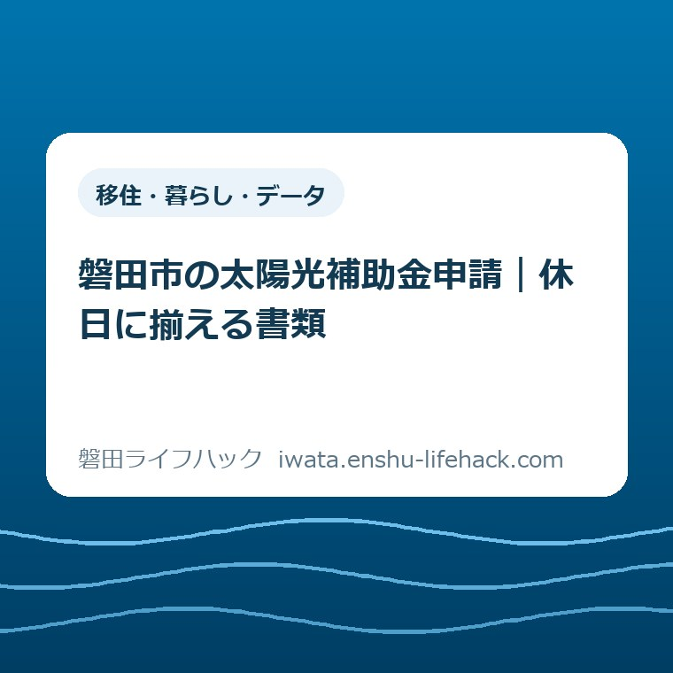

移住・暮らし・データ
磐田市の太陽光補助金申請｜休日に揃える書類

この記事の要点
Q. 太陽光の工事は終わった。仕事を休む前に、何を揃えればいい？
A. 磐田市の太陽光補助金は、令和8年度の奨励金では10kW未満が2万円です。対象は居住・所有・設置時期などの条件で変わります。申請は工事と支払いの完了後。まず設置日・機器名・金額のある領収書を探し、写真や型番資料、原則必要なそらいろラボの入会資料を揃えます。電子申請は24時間対応、支所・郵送は不可。申請前に市公式ページで最新条件と受付状況を確認してください。
休日の準備は、設置日の分かる領収書から
磐田市の太陽光発電設備の奨励金は、住宅の所有や居住、設備の条件によって対象が変わります。工事が終わった家すべてに、自動で振り込まれるお金ではありません。この記事は、自宅への設置を終え、平日に休みを取る前に申請書類を揃えたい持ち主の方へ向けて書いています。
設備を選び、工事の日を調整し、支払いを済ませる。それだけで持ち主の方は時間も手間も使っています。工事の説明書が入った袋を、休日にもう一度開くのは気の重い仕事です。「申請すればよい」で済ませず、どの紙のどこを見るかまで小さく分けます。
大石浩之（磐田市／不動産業）です。私は、補助制度の説明は受け取れる金額だけで終わらせたくありません。誰が書類を持ち、誰が足りない資料を頼むか。そこまで見えて初めて、暮らしの中で使える案内になると考えます。
2026年9月20日の日曜日にする一歩は、設置日の分かる領収書を探すことです。すべてを一度に仕上げる必要はありません。ただし、領収書の発行日を見つけただけで「設置日も確認できた」と判断しないでください。支払った日と設備を取り付けた日は別の情報です。

2万円の対象と、847万円という残額の読み方
磐田市の「令和8年度磐田市新エネルギー及び省エネルギー設備普及促進奨励金」では、住宅用太陽光発電システムの10キロワット未満は2万円です。支給は1世帯につき各機種1基が限度。この記事では、検索で使われる「太陽光補助金」を、この奨励金の意味で使います。
市の案内ページは2026年9月17日更新です。公表された2026年9月14日時点の予算額は1,000万円、受付済額は153万円、残額は847万円でした。9月20日に確認したページ上の数字であって、9月20日現在の受付分まで反映した残額とは限りません。
申請期間は2026年5月1日から2027年3月31日までです。ただし、受付額が予算上限に達した日が先なら、その日で受付終了になります。残額の表示を見ても、自宅分の2万円を取り置きしてもらえたことにはなりません。提出時には受付状況をもう一度見ます。
市の手引きでは、市内に自ら住み、その所有住宅に対象設備を導入していることなどが条件です。賃貸住宅は対象外で、市税の完納も必要です。未使用機器であることや、レンタル・リースを除くことも定められています。持ち家の工事という一言だけで、該当すると決めないでください。
設置工事と支払いは原則として2026年度内に完了している必要があります。太陽光については、系統連系または電力の受給開始日が2026年度内なら申請可能という記載もあります。年度をまたぐ工事は、契約日だけで判断せず、日付の分かる資料を揃えて環境課に確認する場面です。
太陽光は、発電した電気の一部または全部を自宅で使う仕組みが対象で、全量買取制度の利用者は除かれます。出力や契約内容を記憶で答えず、設置時の図面や契約資料に戻ります。ここまでの制度上の条件は、市の奨励金ページと令和8年度の申請の手引きで確認しました。
領収書は、名前と日付を照らし合わせる
太陽光の奨励金で提出する領収書には、設置機器名と金額に加え、設置日の記載が必要です。市の手引きには購入者氏名や販売日、販売事業者名などの確認事項もあります。まず紙を見つけ、その次に記載内容を確かめる。この二段階にすると、探し物と記入作業が混ざりません。
私なら領収書の横に白い紙を置き、「機器名」「金額」「設置日」と書きます。読める箇所には印を付け、見当たらない項目だけ残します。これは市指定の書類ではなく、家で整理するためのメモです。領収書そのものへ自己判断で日付を書き足すための作業ではありません。
新築住宅の代金に設備費が含まれ、領収書に対象機器名が出ていない場合があります。市の手引きでは、こうした場合や振込みで領収書が発行されない場合、購入店などに販売証明書を記入してもらう方法が案内されています。市公式ページから様式を確認できます。
販売店へ頼むときは「補助金用の書類をください」だけでなく、手元の何が不足しているかを伝えるのが私の提案です。「設置日は見つかりますが、太陽光の機器名と金額が分かりません」のように書けば、相手も確認する資料を絞れます。返事が来るまでは推測で埋めません。
領収書の購入者名、申請者名、振込口座の名義も並べて見ます。市の手引きは、購入者氏名と申請者の一致、申請者本人の口座を求めています。家族が支払いを管理している場合でも、都合のよい名義に勝手に置き換えず、不一致があれば市へ確認する事項として残します。
住宅の補助は、同じ磐田市の制度でも準備する時点が違います。別の工事を検討するご家族には、実家建替え補助の期限と条件を整理した記事も参考になります。太陽光の設置後申請という順番を、ほかの補助へそのまま当てはめないための読み分けです。
共通書類を「自宅にある物」と「取り寄せる物」に分ける
磐田市の奨励金は、申請書だけでは提出が完結しません。市の提出書類一覧と手引きを基に、太陽光の申請準備を次の表に整理しました。表は探す場所の目安を添えたもので、個別案件の受付可否を決めるものではありません。
| 書類・資料 | 家で確認すること |
|---|---|
| 支給申請書（様式第1号） | 令和8年度の公式様式と記入例を開く |
| 領収書または販売証明書 | 設置日・機器名・金額・購入者名を照合する |
| 設置状況のカラー写真 | 設置した機器の全景が分かる写真を探す |
| 設置場所の地図 | 自宅の位置が分かるかを確認する |
| 型番の分かる資料 | 設置時の図面などで該当機器を見つける |
| 提出書類チェックリスト | 窓口では共通・太陽光等の追加分を確認。電子申請は不要 |
| 振込口座の確認資料 | 通帳の写しなどで本人名義と口座情報を確認する |
| 受給者の本人確認資料 | 運転免許証など、提出する本人の資料を用意する |
私は、書類を「家にある」「販売店へ頼む」「市に確認」の三つに分けることを勧めます。家にない資料を探し続けるより、誰の返事が必要かを明らかにする方が、その後の予定を立てられます。市の一覧を手元に置き、見つかった物から重ねれば十分です。
設置写真は屋根のパネル全体が分かるかを見ます。写真が必要だからといって、自分で屋根に上がる段取りにはしません。市の手引きには、全景の撮影が困難な場合の配置図などの扱いもあります。施工時の写真の有無を販売店へ尋ね、代わりの資料でよいか市に確かめます。
地図は細かな装飾より、自宅がどこかを第三者が読み取れることを優先します。市の手引きでは様式や縮尺を指定せず、容易に自宅の場所が確認できるものとしています。自分には分かる地図でも、家の位置が示されていなければ伝わりにくい、と考えて見直します。
電子申請の場合は、提出書類チェックリストの提出が不要です。ただし、写真や領収書などの添付資料まで不要になる意味ではありません。チェックリストは紙提出の有無とは別に、自宅で漏れを見つける道具として使えます。送信方法が変わっても、裏付け資料を揃える作業は残ります。
スマートフォンで資料を撮るなら、四隅と文字が入り、光の反射で日付が消えていないかを見ます。これは提出し直しを減らすための私の提案です。添付できる形式や容量は、実際の電子申請フォームで確認してください。確認していない上限値を、この記事では決めつけません。
そらいろラボ用の資料は、もう一組ある
太陽光発電システムの奨励金を申請する場合、原則としてJ-クレジット創出プログラム「そらいろラボ」への入会が必要です。市の入会案内では、奨励金の申請と一緒に手続きするとされています。領収書と写真を揃えただけで終わり、と思いやすい箇所です。
太陽光の入会資料は、入会届に加えて、パネルの公称最大出力が分かる保証書や図面などを用意します。パワーコンディショナーについては、メーカー名、型式、導入台数、製造番号の確認資料も必要です。屋根のパネルと、電気を変換する機器の資料を取り違えないようにします。
発電設備の連携開始日が確認できる通知なども必要です。領収書に書かれた設置日を、そのまま連携開始日として転記する作業ではありません。設置の日、支払った日、電力系統につながった日を別々に記録すると、似た日付に引っ張られずに確認できます。

そらいろラボは入会費・年会費が無料ですが、入会時の紙を出して終わる仕組みではありません。市の案内には、発電実績のデータ提供を年1回、4月頃にEメールで依頼する場合があると記されています。入会期間は原則8年です。受信するメールと発電記録を誰が見るかも、家族で決めておきたいところです。
一方、市の別紙では、既に他のJ-クレジットのプロジェクトや類似制度に登録している場合など、そらいろラボへの参加が不要な条件も示されています。既登録の場合は、その事実が分かる書類を提出します。「原則」を「例外なく全員」と読み替えないことも、余計な手間を避ける準備になります。
太陽光と蓄電池の両方を設置した方には、両方に対応する資料が必要です。この記事は太陽光を中心にしています。蓄電池も申請する場合は、市公式ページの蓄電池欄と別紙を併せて見てください。太陽光の書類だけで一式揃ったと考えないようにします。
良い点——平日の移動を減らせる電子申請
磐田市の太陽光奨励金は、環境課窓口への持参に加えて電子申請ができます。電子申請は24時間対応で、不定期のメンテナンスがあります。
私は、書類が揃った持ち主の方が、提出のためだけに勤務予定を動かさずに済む選択肢を持てる点を評価します。昼休みに移動する計画を立てる前に、家で送れるかを検討できる。窓口へ行く負担を減らす入口として、電子申請には具体的な価値があります。
市の案内が、領収書以外に販売証明書という方法を示している点も、私は使いやすいと考えます。住宅と設備をまとめて支払った家でも、どの事業者へ何を頼むかが見えます。書類がないから即座に諦めるのでなく、購入店へ確認する道が用意されています。
予算残額に基準日が付いていることも、判断材料になります。私は、847万円という数字の大きさより「いつの受付状況なのか」が分かる方を評価します。残額を保証として扱わず、準備を始める材料と提出直前の確認材料に分けられるからです。
注文したい点——必要な資料が二つの案内に分かれる
太陽光奨励金の書類準備では、共通資料とそらいろラボの入会資料を両方読む必要があります。共通の申請書類一覧と、太陽光の追加資料の欄を照合する作業が生じます。
私は、この二組を初めて読む人が一目で照合できる案内を望みます。機器名や型番だけでなく、何の日付が必要なのかまで並ぶと、持ち主が販売店へ頼む内容も明確になります。職員個人への注文ではなく、資料を探す側から見た案内の組み立てへの要望です。
とくに設置日と連携開始日は、似た情報に見えて役割が違います。私は、専門用語を知っている人の読み方を、すべての申請者に求めたくありません。制度を簡単だと言うより、「領収書で見る日」「電力の通知で見る日」と書き分ける案内の方が、休日の作業を助けると思います。
ただ、どこまで説明を短くしてよいかには、私も迷いがあります。一枚の表に押し込んで、名義や入会の例外条件を消してしまえば、別の行き違いが起きます。入口では探す物を絞り、個別条件は公式の手引きへ戻れる形が、今の私の答えです。
対案・結論——休みを取る前に、提出先を決める
磐田市の太陽光奨励金は、支所と郵送では受け付けていません。窓口は国府台3-1の磐田市役所西庁舎1階、環境課です。手引きにある窓口時間は平日8時30分から17時15分で、土日・祝日・年末年始を除きます。電子申請を選ぶか、窓口へ持参するかを先に分けます。
福田・竜洋・豊田・豊岡の支所が身近でも、この奨励金の提出先にはできません。別の用事と一緒に済ませたい場合は、磐田市の4支所窓口でできることを読み、手続きごとに窓口を分けてください。近い庁舎と、受け付ける庁舎が一致するとは限りません。
持参するなら、出発前に市役所と支所の窓口案内で行き先も確認します。日曜日に資料を整理できたことと、日曜日に窓口へ提出できることは別です。休暇の申請を先に出すより、資料の不足と提出方法を確かめてから予定を組む方が私はよいと考えます。
不明点を環境課へ尋ねる際の電話は0538-37-4874です。設置時期、設備の種類、不足している資料を確認してから相談します。市の公式ページには手引きと申請様式も掲載されています。
私は、質問を一つのメモにまとめる方法を勧めます。「対象ですか」だけでなく、何を持っていて何がないかが伝われば、確認すべき条件を共有しやすくなります。書類を持つ家族が別にいる場合は、その人が返事をできる連絡方法も決めておくと、電話の途中で探し物をせずに済みます。
電子申請では、入力を始める前に資料の所在を決めておきます。送信できた場合は、画面に示された受付情報を手元に残すのが私の提案です。24時間申請可能という案内は、日曜日に審査も終わるという意味ではありません。受付と支給決定を一緒にしないでください。
大石の視点——2万円と、家族が動く時間を一緒に考える
私は、2万円を受け取るために、書類不足で仕事を二度休む段取りにはしたくありません。制度が立派でも、使う人が動けなければ意味がない。家計の足しになる金額と、資料を集める人の時間は、どちらも暮らしの側の現実です。
私なら、休日の食卓に工事の書類袋を一つだけ置くところから始めます。全部を読み切る目標ではなく、設置日の書かれた一枚を探す。その一枚がなければ、不足した項目を販売店へ頼むメモを作る。これは私の考える進め方で、実際の相談事例を再現した話ではありません。
家族で作業する場合は、資料を持つ人と提出する人が違っても、作業を分担できます。ただし、申請者や口座名義など制度が求める一致は、作業分担とは別に確かめます。誰か一人が全部を覚える形より、どの袋に何があるかを共有できる形にする。それが、工事後の書類を次の確認にも使える状態にする方法だと私は考えます。
今日の一歩は、設置日・機器名・金額のある領収書を探すことです。見つかったら、その紙を申請資料の先頭へ。制度の条件と数値は変わるため、最終的な対象可否、書類、受付状況は、必ず磐田市の公式ページと環境課で確認してください。
太陽光補助金の申請準備でよくある質問
磐田市の太陽光奨励金について、休日の準備で迷いやすい三つの確認事項を整理します。個別条件は市の最新案内に照らしてください。
領収書に設置日がありません。申請できますか。
磐田市の奨励金では、設置日・機器名・金額が確認できる領収書または販売証明書が必要です。領収日だけで設置日を判断せず、購入店へ不足項目を確認してください。住宅代金に機器名が含まれていない場合などは、販売証明書の方法が市の手引きにあります。手元の書類で足りるかは環境課へ確認します。
日曜日に申請できますか。支所や郵送でも出せますか。
磐田市の太陽光奨励金は電子申請が24時間可能ですが、不定期のメンテナンスがあります。日曜日でも資料の準備や電子申請はできますが、窓口は土日・祝日等が休みです。窓口提出先は市役所西庁舎1階の環境課で、支所や郵送では受け付けません。送信したことと審査完了は別なので、受付後の案内も確認してください。
そらいろラボには必ず入会するのですか。
太陽光の奨励金申請では、そらいろラボへの入会が原則です。ただし既に他のJ-クレジットのプロジェクトや類似制度へ登録している場合などは例外があります。既登録の方は登録が分かる資料を用意し、市に確認してください。入会費・年会費は無料ですが、発電実績の提供依頼に対応する場合がある点も、規約と公式案内で確認します。
参考にした公式情報
- 令和8年度磐田市新エネルギー及び省エネルギー設備普及促進奨励金（2026年9月17日更新）／磐田市（2026年9月20日確認）
- そらいろラボ（2026年4月17日更新）／磐田市（2026年9月20日確認）
- 令和8年度 申請の手引き（PDF）／磐田市（2026年9月20日確認）
- 太陽光発電システム及び家庭用蓄電池を設置した方へ（PDF）／磐田市（2026年9月20日確認）

最終確認日：2026-09-20 ／ 本記事は公表情報と執筆者の見解を分けて記載しています。制度・数値・公開状況は変更される場合があるため、最新情報は磐田市公式ページでご確認ください。